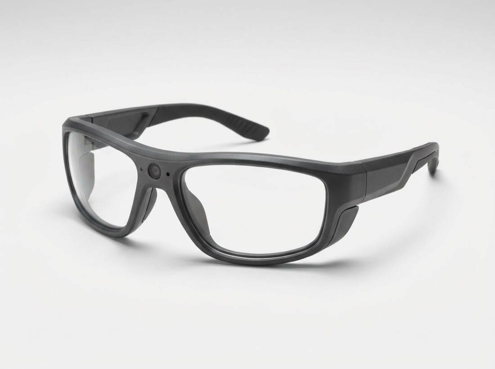
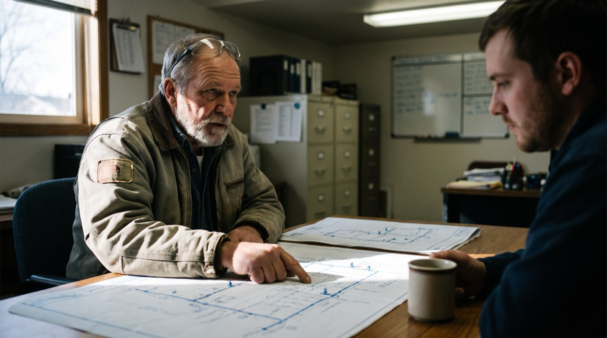
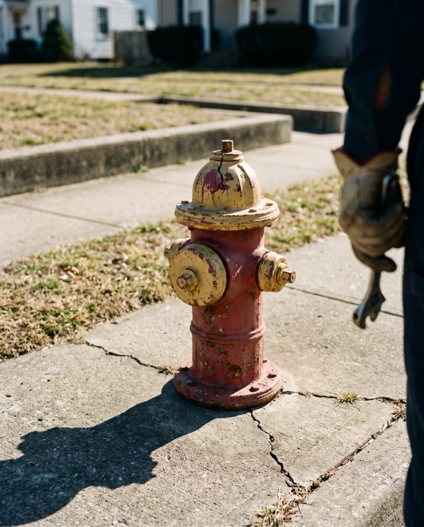
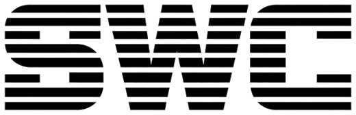

Keepwell turns the rounds your operators already run into the compliance record, the crew’s know-how, and a map of every asset on the route. Captured hands-free through the safety glasses they already wear.

Today that record gets pieced together from memory at the end of a long day. A missed sample or a lost log becomes a violation, even when the water was perfect.
Keepwell turns the work itself into the record, so nothing gets missed and nothing gets lost.
No tablets, no forms, no writing it up after. The record is done when the round is.
The operator clips on the safety glasses and works the job like always. Hands stay on the equipment.
AI records what they see, say, and do, and files it where it belongs: the sampling log, the asset’s history, the system map.
Every entry is timestamped and traces back to the moment it happened. Ready for the state, the next hire, and the GIS team.
From the wet well to the water main. The regulated tasks a system runs on, documented as they happen.
The panel, the floats, the amp draw, logged and timestamped. The lift-station record a sanitary survey asks for.
Free chlorine, pH, sample time, and chain of custody, captured as the sample is taken. The monitoring record, done right.
Crack the discharge, build the pressure, watch the VFD. Done right, so a power blip never becomes a main break.
Turn counts and GPS, logged to the asset. The distribution record you are required to keep, finally kept.
Your senior operator knows which pump runs warm and which float sticks. None of it is written down. Keepwell gets it out of his head and into a library the next hire can search, pinned to the asset it’s about.
The tip lives on Lift Station 4, where the next operator will be standing when they need it.
The new hire asks why pump 2 runs warm and hears the answer Frank gave on the round.
Coverage by operator and asset. Know who retires next and what you still haven’t captured.
Some of it never comes up on a round. Where the old main runs, why the pressure zone got split, which valve is under the parking lot. Put the drawings on the table and let him talk. Keepwell asks the follow-ups and files every answer to the asset he’s pointing at.
Frank says “we moved it in ’98.” Keepwell asks where it went and why.
Each answer lands on the asset on the drawing, with the minute of the interview it came from.
Keepwell tracks what’s covered. The next session starts on the assets Frank hasn’t talked through yet.

AI-GENERATEDLogbooks, O&M manuals, as-builts, old work orders, the last sanitary survey. Scan them or drop in the PDFs. Keepwell reads every page and adds what it finds to the same library as Frank’s tips.
Pump swaps, setpoints, and repairs come out of the text and go to the asset they’re about.
When the library answers a question, it cites the logbook page it came from.
Where the as-built says one thing and Frank said another, Keepwell flags it for someone to settle.
The tech walks past a hydrant with a cracked cap. They say “log it.” The location, photo, and condition land on your system map before they’re back in the truck.
GPS from the paired phone, a photo from the glasses, and the time. No coordinates typed in later.
“Cap’s cracked, paint’s gone, still turns.” Filed as condition fair, with a follow-up.
Every pin exports to the GIS and CMMS you already run. The inventory builds itself on the rounds.

“Log it.”Lightweight safety glasses that see what the operator sees and hear what they say, so capturing the job costs nothing extra.
No tablet, no clipboard. The work never stops to record it.
Every entry is timestamped and linked to the asset. Defensible in a survey.
ANSI Z87 protective lenses. The PPE your crew already has to wear.
Reads from and writes to the CMMS and SCADA you already own.

Standard WaterBook a live walkthrough. We’ll capture one workflow with your operator and hand you back the audit-ready record.